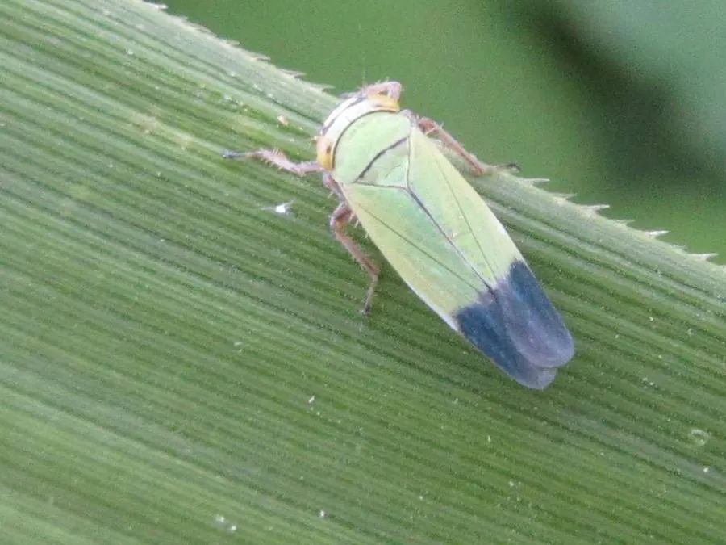

昆虫 · 动物界
黑尾叶蝉 Nephotettix cincticeps

体黄绿、雄虫前翅末端黑色的小型叶蝉，刺吸水稻汁液并传播矮缩病，是中国稻区常见的迁飞性害虫。
- 分类
- 门节肢动物门纲昆虫纲目半翅目科叶蝉科属黑尾叶蝉属
- 栖息环境
- 水稻田、茭白田、沟渠边和禾本科杂草丛
- 地理分布
- 中国各稻区，以及日本、朝鲜半岛和东南亚
- 保护级别
- 尚无保护级别；为稻区常见害虫，防治以抗病品种与药剂为主
物种志
黑尾叶蝉的体长约四至六毫米，体形细长，体色黄绿至草绿，头部有两个明显的黑斑，前胸背板上有黑色横带，雄虫前翅末端呈黑色，黑尾叶蝉之名由此而来，雌虫前翅末端则为淡褐色。它的后足胫节生有两列刺毛，善跳跃，受惊时斜向弹飞。若虫体形与成虫相似，但翅未发育完全，体色偏淡。
它分布于中国各稻区，以及日本、朝鲜半岛和东南亚，栖息在水稻田、茭白田、沟渠边和禾本科杂草丛，一年发生多代，以若虫或成虫在杂草和稻桩上越冬，春季迁入稻田繁殖。成虫和若虫都刺吸稻叶和稻茎的汁液，造成叶片发黄枯萎，更严重的是传播水稻普通矮缩病和黄矮病，病株矮小、分蘖减少，产量大幅下降。它有较强的趋光性，夜晚常扑向稻田灯光。它尚无保护级别，防治以抗病品种、清除田边杂草和药剂为主。
形态与习性
- 体长约四至六毫米，体形细长
- 体色黄绿至草绿，头部有两个黑斑
- 识别雄虫前翅末端黑色，雌虫淡褐色
- 为害刺吸稻叶稻茎汁液，传播矮缩病
- 习性后足善跳，有趋光性
- 发生世代一年多代，以若虫或成虫在杂草稻桩越冬
趣味知识
- 雄虫的翅膀尖是黑的，雌虫却是淡褐色，看尾端就能分雌雄。
- 它传播的矮缩病让稻株变矮、分蘖变少，比直接吸汁更伤产量。
- 夜里它扑向稻田的灯，灯下能落薄薄一层。